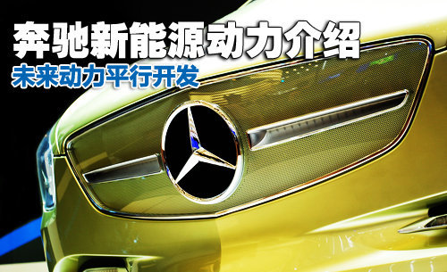

未来动力平行开发 奔驰新能源动力介绍
闫孟滢| 2011-11-03 09:07
1燃料电池动力 未来发展方向
[汽车点评网 技术] 当所有汽车品牌都在着力于电动、油电混合的时候，奔驰汽车却走了一条不太一样的道路，即为平行发展：传统内燃机动力、混合动力以及新能源动力（电动）同时发展；同时选择性的将相对成熟的科技对市场开放，或者让消费者进行体验，并进行信息收集；而对于奔驰汽车来说，其它品牌所轻视的燃料电池动力才是奔驰的信心所在，即为未来新能源动力的主要发展方向。

奔驰汽车动力系统主要划分
按照最接近民用的顺序来分，奔驰旗下的三种动力分别为优化内燃机，即为通过对内燃机如喷油量控制等的更优化控制来达到节能、减排的目的，比如我们早已经在市面上见到的CGI缸内直喷涡轮增加发动机车型、BlueDIRECT第三代汽油直喷发动机车型等。
其次为混合动力能源，比如目前已然上市的奔驰S400 HYDRID车型，虽然是一款很简单的弱混车型，但是首先让自己旗下最高端的车型装配也算是比较大的尝试。
最后就是电动车，其中分为目前比较常见的电池驱动，以及奔驰在努力开发中的燃料电池系列，比如已经小批量量产并对消费者进行试驾的F-CELL燃料电池车型、纯电动的A-Class E-CELL以及smart fortwo车型等。

燃料电池系统简述
我们先从奔驰汽车的燃料电池系统开始谈起，这在目前全球的新能源动力中属于比较生僻的一个词语，因为大多品牌主要做的还是油电混合动力、电动之类的车型，但是燃料电池却有着混合动力以及纯电动车型不能比拟的优势，同时也是被公认为最有可能真正替代内燃机动力的新能源动力。
奔驰B-Class F-CELL是一款燃料电池动力车型，起名字中的F-CELL其实就是燃料电池（Fuel Cell）的意思，它是一种化学电池，通过物质之间化学反应中所释放出的能量转化为电能，在工作中，它需要持续的得到其它活物质的供给，即为燃料和氧化剂。同时，因为它是把燃料通过化学反应释放出的能量转变为电能，所以被称为了燃料电池。
燃料电池的种类很多，而奔驰B-Class F-CELL所使用的则是一种比较常见的燃料电池系统，即为质子交换膜燃料电池（Proton Exchange Membran：Fuel Cell,PEMFC），采用可传导离子的聚合膜作为电解质，其主要由质子交换膜、催化剂层、扩散层、双击板组成，而其工作原理很像水电解的“逆”装置，不过这是一套比较复杂的交换过程。
简单地说，燃料电池的的燃料其实只有氢，在发生燃烧的时候通过过氢氧化和作用将其所释放的化学能转变为电能，而不通过热机过程，也不受卡诺循环的限制，同时其副产物不会对我们的生存环境带来污染，至少其唯一的副产物纯净水只能算是生活必需品。
燃料电池优缺点解读
其实根据燃料电池车的工作原理来说，其所谓的燃料电池其实就好象串联式混合动力车的工作原理，其燃料电池并不是纯粹意义上的电池，而是一个输送电能的“发动机”，其将化学能转化为电能后输送给电池，尔后再将电能输送给电动机，或者其实称它为串联式混合动力车也未尝不可，但是它的优点却更多：
1、比如它的能量转换的效率更高。过氢氧化和作用将其所释放的化学能转变为电能，而不通过热机过程，也不受卡诺循环的限制；
2、无污染。其排放物仅为可食用的纯净水，或者说开车不需要带太多的饮用水了。
3、结构简单。燃料电池车（质子交换膜燃料电池）的电池模块是一种积木化的结构，使得电池组的组装以及维护都非常方便，同时因为其工作为误解些运动部件，以及工作中只会产生水，所以其在运行中的噪音也会更低。
4、氢能源来源充分。氢是一种来源非常广泛的能源，且是一种可再生资源，比如可以通过石油、天然气、甲醇、甲烷等进行重整制氢、光解水制氢等方法得到氢气。
不过缺点同样存在，其成本与其它新能源动力一样会非常高，同时对氢的纯净度要求非常高，以及因为氢属于活性物质，所以对于其储存器具的要求也颇为严苛，致使其在科技含量以及成本上都不会比其它新能源动力低，而这些也正是制约燃料电池发展的主要瓶颈，虽然奔驰汽车在燃料电池方面有着不错的发展，但是其瓶颈则依然卡在了电池能量密度、制造成本等问题之上，但不可否认的是，奔驰在燃料电池方面确实走在了前边。
2奔驰混合动力及电动动力
奔驰混合动力
奔驰汽车目前投放如市场中的混合动力系统车型仅有S400L HYBRID一款，同时它也是奔驰汽车的第一款混合动力车型，按照其官方给出的数据而言，这款车的综合油耗仅为8.6L/100km，相对于这样一台有着庞大身躯的豪华轿车而言，它的油耗确实很低，同时敢讲第一款混动的试水车放在自己的顶级车型中，这样的勇气以及自信绝对值得肯定。
S400L HYBRID是一款使用了并联式混合动力的车型，其电动机的重量很小，并且被工程师集成在了其变速箱中，其实从这里我们就可以基本知道其混合动力的工作性质，即为一个在起步阶段为车辆提供额外20PS/160Nm（起始扭矩）动力的弱混型混合动力车型。
奔驰S400L HYBRID的动力传动组件包括汽油发动机、附属磁电发动机，一个为混合动力模块特别配备的七速自动变速器，不可或缺的能量和电子控制元件，变压器以及高压锂离子电池；按照工作电源来说，其所使用的电动机其实就是一款三相异步电动机，通过电磁势能转化动能进行驱动。
奔驰S400L HYBRID透视图
相对于其它竞争品牌的混合动力车型而言，奔驰的主要混合动力结构其实就是锂离子电池输出电能给其三相异步给出额外的动力驱动，同时通过制动再生系统回收无用能返回给电池进行储存，虽然在其上市之初这是一个比较新颖的科技，但是就目前可以跟家用电脑更新速度媲美的新能源市场来说，其技术已经属于比较平凡的动力系统。
奔驰电动动力
目前奔驰旗下的电动车除了前边说到的B-Class F-CELL燃料电池车以外，目前只有A-Class E-CELL的纯电动车型以及smart fortwo电动车可以称之为量产车，虽然没有进行销售，但是同样也有如同B-Class F-CELL燃料电池车一样的小批量量产对消费者进行试驾体验，并进行信息反馈，为未来生产更接近真正量产的电动车做准备。
不过奔驰的电动车并没有像其竞争对手宝马那样拿到中国来进行路试，最主要的原因还是因为市政建设的局限性，毕竟国内所有的民用汽车充电站加起来可能用一只手就可以数完，所以谨慎对之，并为想办法为中国的特点来特别开发可能将是奔驰电动车下一步需要攻坚的重要课题。
奔驰BlueZERO新能源动力概念车介绍
关于奔驰的小批量量产电动车在这里不多做介绍，在后边主要介绍下奔驰目前的概念车BlueZERO，其共有三个版本，分别为F-CELL的燃料电池动力版、E-CELL的纯电动驱动版，以及E-CELL PLUS混联式混合动力版。
BlueZERO概念车
BlueZERO E-CELL概念车采用全电力驱动技术，其搭载的锂离子电池组的输出功率为15kw/h，如果充电30min，BlueZERO E-CELL概念车可以连续行驶50km；如果延长充电时间至一到两个小时，该车最远可以连续行驶200km。
BlueZERO E-CELL概念车采用燃料电池驱动，其基本原理与上一页的B-Class F-CELL基本相同，依然是一款无污染排放的电动车，只是它的整体驱动性能要好于纯电动驱动车辆，并且相对于未来车辆的能源来说，它的可行性会更高。
BlueZERO E-CELL PLUS概念车除了搭载了与BlueZERO E-CELL相同的锂离子电池组外，还搭载了与smart fortwo相同的1.0L涡轮增压汽油发动机，这台三缸发动机可在3500rpm的恒定转速下保持50kW的输出功率；在需要的时候，汽油发动机还可通过17.5kW/h的发电机对锂离子电池进行充电，换句话说，这款E-CELL PLUS概念车其实就是一款混联式混合动力车型。（文/汽车点评网 闫孟滢）